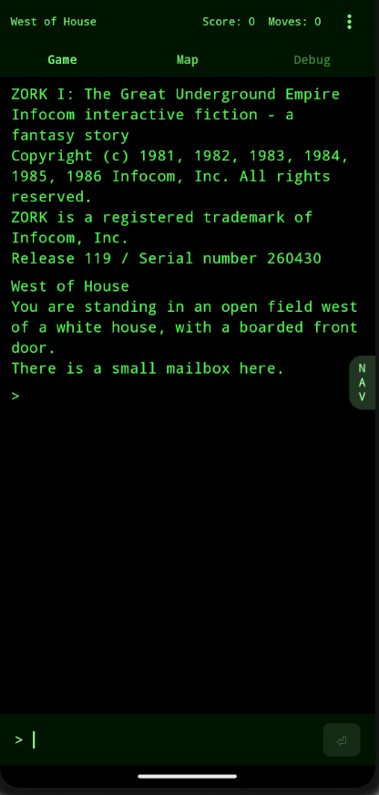
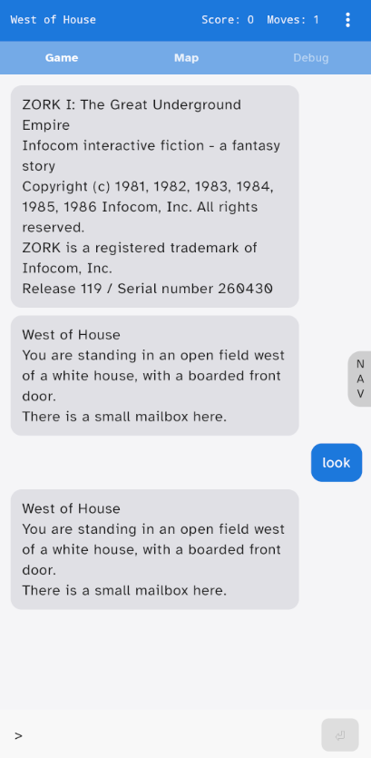
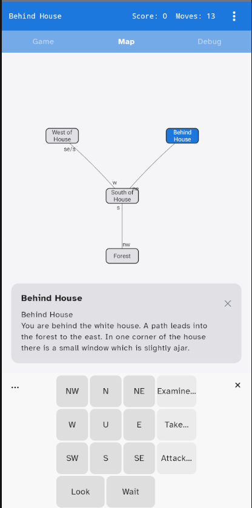
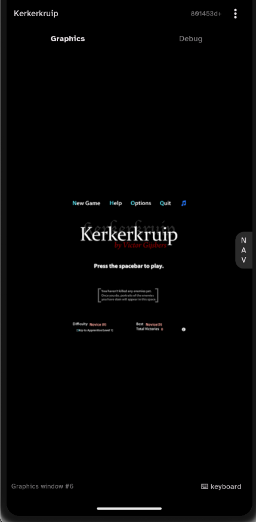

IFMachine
Interactive fiction for Android.




IFMachine plays interactive-fiction story files — both classic Infocom-era Z-machine games (Zork, The Hitchhiker's Guide to the Galaxy, Trinity, …) and modern Glulx games (Counterfeit Monkey, Kerkerkruip, Hadean Lands, …).
- Two display modes: a faithful retro terminal and a phone-friendly chat layout.
- Auto-generated map of rooms you've visited, with a directional keypad for moving.
- Optional Google Drive sync for save files — off by default, your own Drive folder.
- Built-in IFDB browser for finding and downloading games.
- No ads, no analytics, no tracking SDKs. Read the privacy policy.